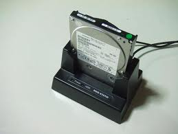
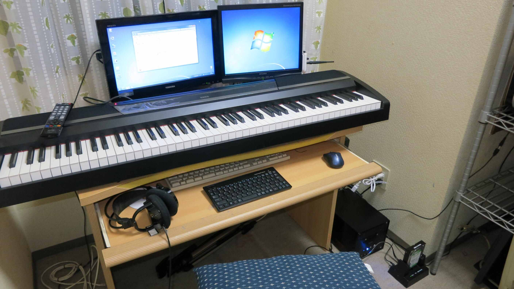

| TOP | weblog | TIPS | Works | リンク |
| 2012-10-25 Windows8への切り替え準備 Windows8の体験版を使ってみて、思っていた以上に動作が軽かったので、ＰＣを少しだけパワーアップしてＷｉｎｏｄｗｓ７から乗り換える事にします。 パワーアップは、 ・メインメモリを２ＧＢ→４ＧＢにアップ。 ・使っていない東芝ＲＥＧＺＡ１９インチがあるのでＨＤＭＩつきビデオカードを購入しディスプレイ２台構成にします。 ・ネット環境はEMOBILEなのでWi-Fiの追加。 これらのWindows8Proのインストールでなにか問題が生じると嫌なので今使っているクローンを作成します。 で、クローン作成に使用したソフトが「EaseUS Todo Backup」と言うフリーソフトです。 大変よくできたソフトウェアで、おおよそ思いつくバックアップは何でもできそうです。 最近ではDVD-RやBD-Rでも容量が足らなくて細切れにしかバックアップ取れないので、今使っているHDDより大きいサイズのHDDのクローンを作るのが時短で手っ取り早いとおもいます。 それにDVD-RやBD-Rはバックアップメディアとしては適切じゃないし。 （ご参考「DVD-Rへのバックアップについて」） 元に戻せばOSからちゃんと起動してくれるしね。 バックアップＨＤＤの環境はAOTECHの「HDD STAND」。 この手の製品の存在は昔から知っていたのですが、不安定な状態でＨＤＤを置くという構造に不安があって使ってなかったんですが、使ってみると、やっぱり、すげー楽です、eSATAでも接続できて速いし。  Windows8Proは「アップグレード版」と「DSP版」の２つしかリリースされません、「普通版」が無いのです。 ですので、、メインPCのlenovo ThinkPad E520はメーカー製なので「DSP版」では（たぶん）インストール出来ません 以前、DSP版のWindows7Proをlenovoにインストールしてみたのですが、インストール初期段階で「メーカー製だからダメ」的なメッセージでインストールできませんでした。 どうやらBIOSのメーカー名「すなわちlenovo」をチェックしているみたいです。 もう一台のＰＣはベアボーンなのでＤＳＰ版でもいいのですが値段が高いのでアップグレード版をAmazonで購入しました。 (関連記事） 「2012-11-19 結局「Microsof Windows8Pro アップグレード用」って一体なに？」） 下の写真が（仮）スタジオだよ。  |